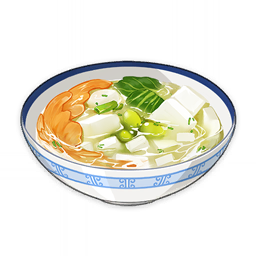
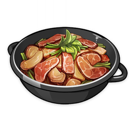
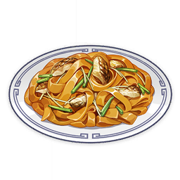
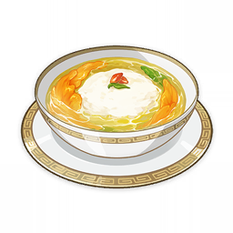
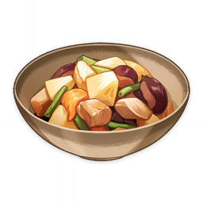

Hu Tao
Guides
Events
Characters
Weapons
Enemies
Materials
Artifacts
Tools
Materials
Snapdragon
Snapdragon
Teyvat's Resources
Cooking Ingredient
Can be eaten once cooked. As a spice, it can bring wonderful flavor to dishes.
Sources:
Found near lakes and river banks
Used by food:
Cream Stew

Jewelry Soup
Vegetarian Abalone

Cured Pork Dry Hotpot

Stir-Fried Fish Noodles

Chicken Tofu Pudding
Stir-Fried Shrimp
Tricolor Dango
Tri-Flavored Skewer

Konda Cuisine
Sangayaki
Sabz Meat Stew
The Palace Jewels